|
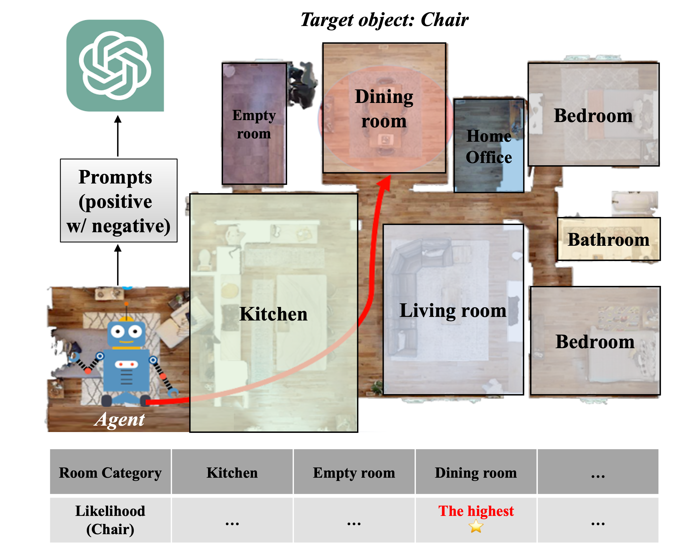
Proposal concept 
Real world experiments with Kobuki mobile robot (RGB-D camera with LiDAR)
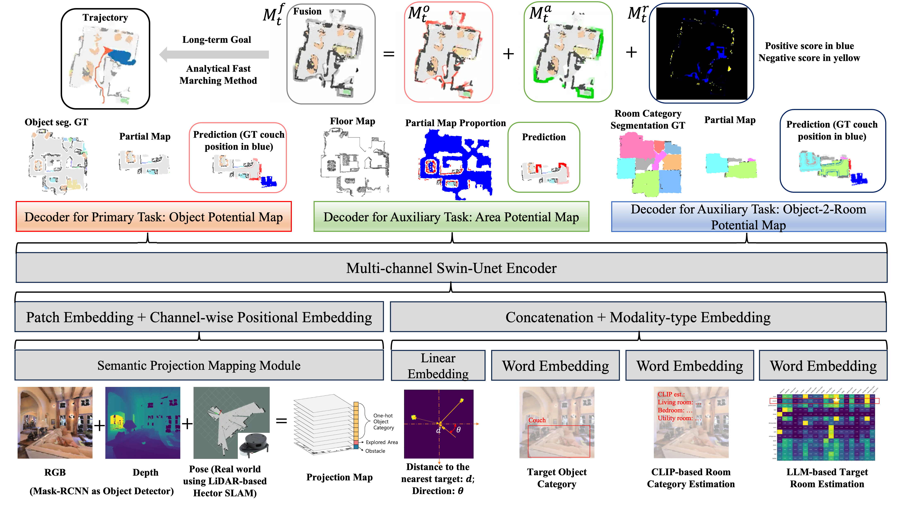
System overview
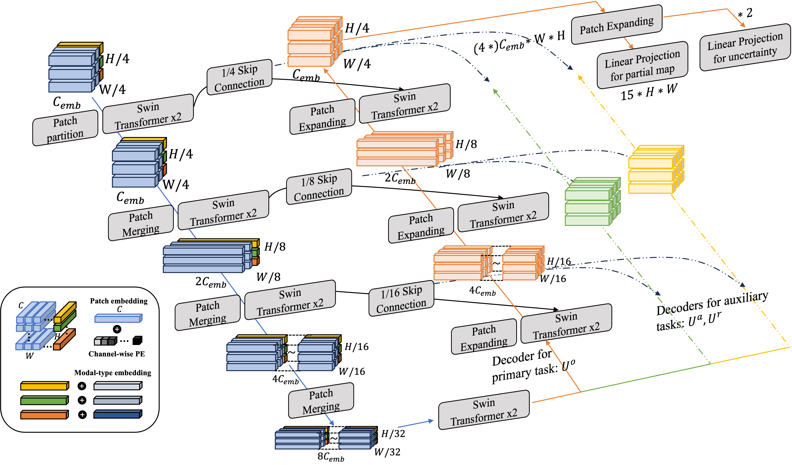
Network architecture |
|
|
|
|
|
|
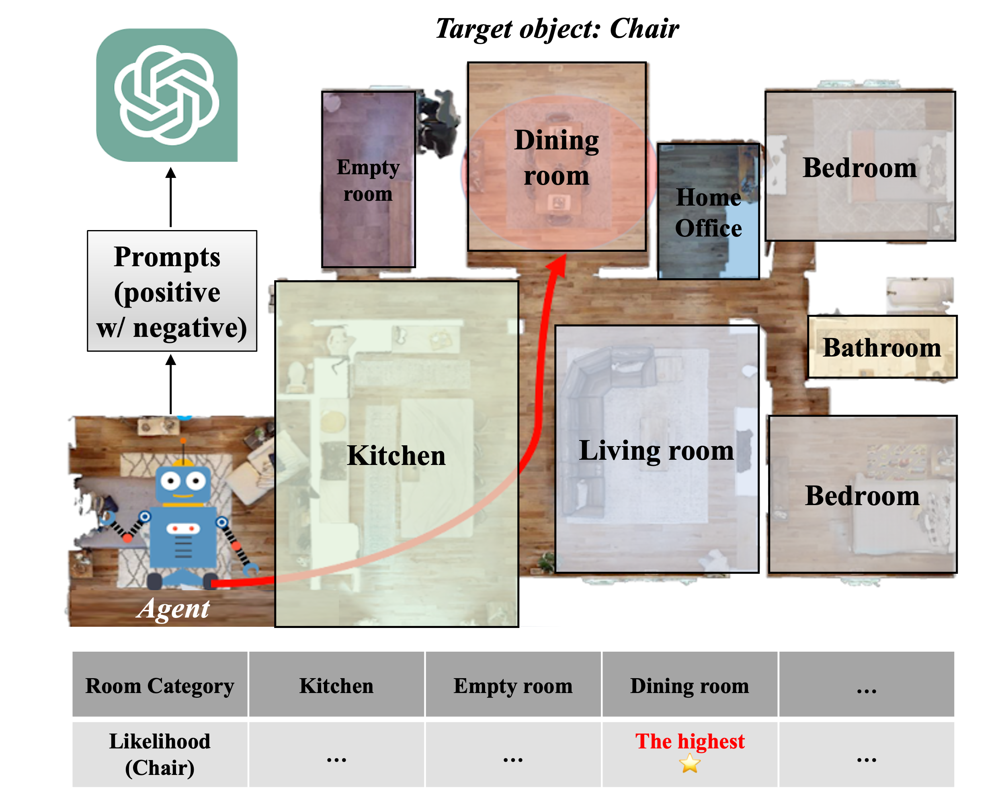
Proposal concept
Real world experiments with Kobuki mobile robot (RGB-D camera with LiDAR)
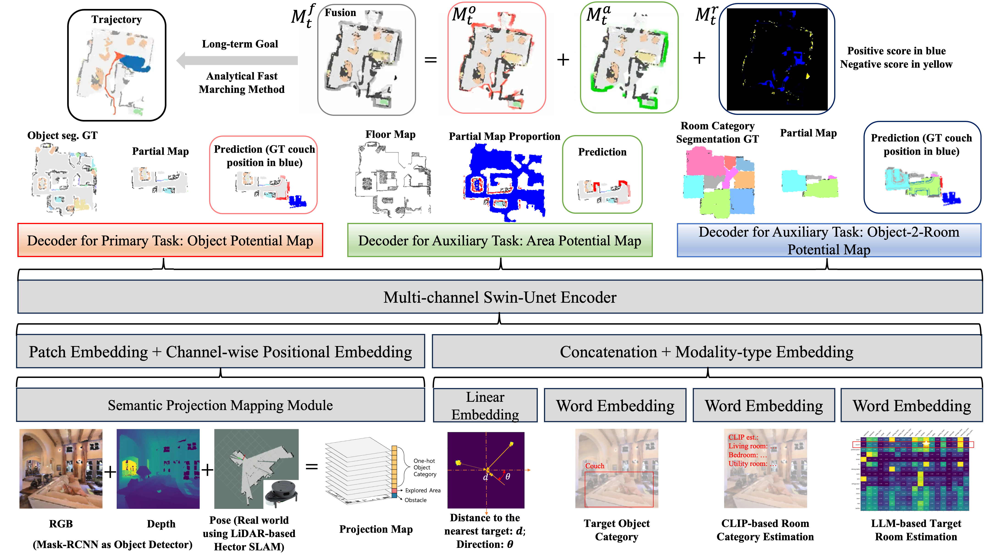
System overview
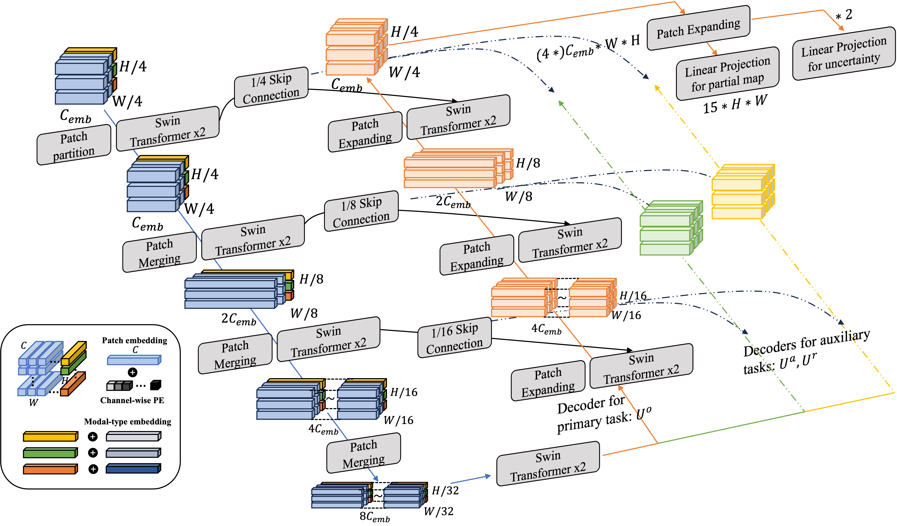
Network architecture |
|
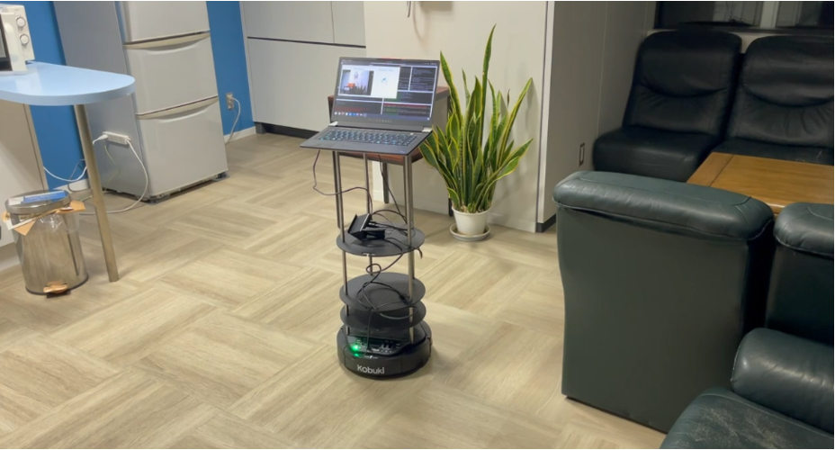
Object-goal navigation is a crucial engineering task for the community of embodied navigation; it involves navigating to an instance of a specified object category within unseen environments. Although extensive investigations have been conducted on both end-to-end and modular map-based, data-driven approaches, fully enabling an agent to comprehend the environment through perceptual knowledge and perform object-goal navigation as efficiently as humans remains a significant challenge. Recently, large language models have shown potential in this task, thanks to their powerful capabilities for knowledge extraction and integration. In this study, we propose a data-driven, modular-based approach, trained on a dataset that incorporates common-sense knowledge of object-to-room relationships extracted from a large language model. We utilize the multi-channel Swin-Unet architecture to conduct multi-task learning incorporating with multimodal inputs. The results in the Habitat simulator demonstrate that our framework outperforms the baseline by an average of 10.6% in the efficiency metric, Success weighted by Path Length (SPL). The real-world demonstration shows that the proposed approach can efficiently conduct this task by traversing several rooms. |
|
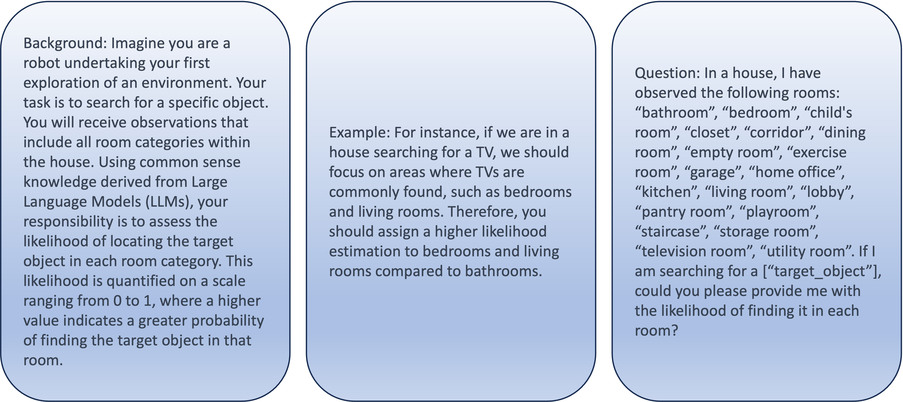
Chain-of-Thought positive prompts
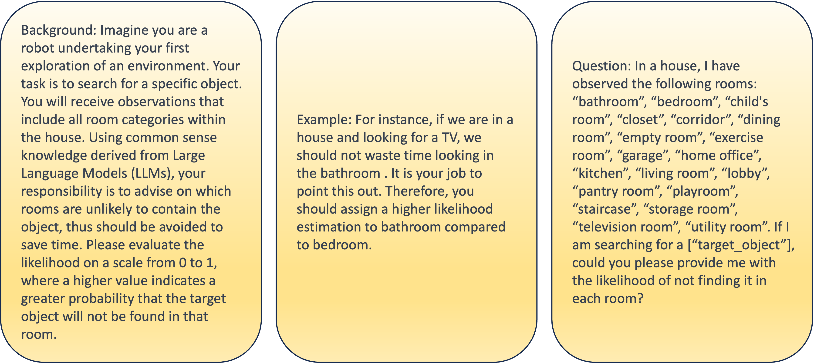
Chain-of-Thought negative prompts
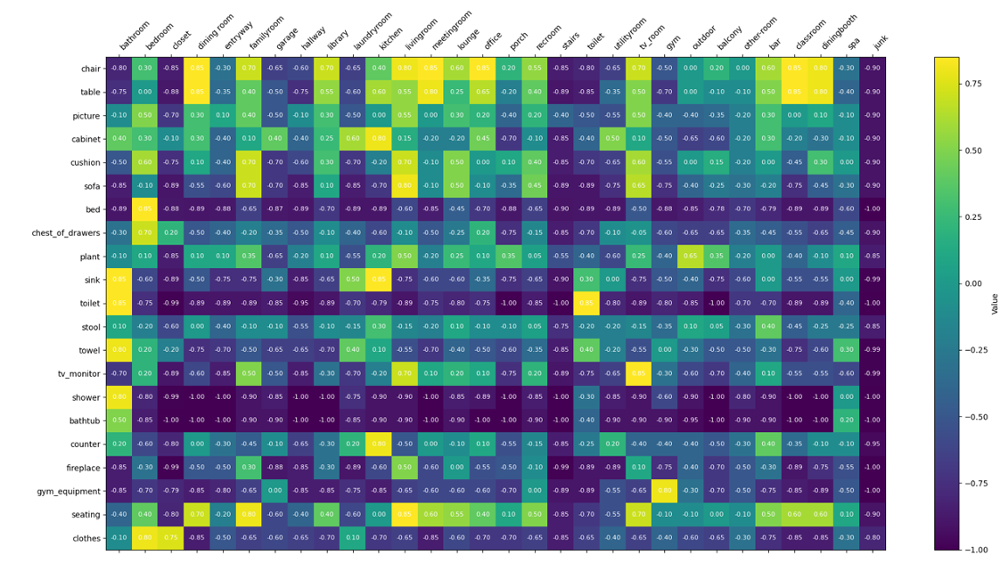
Object-to-room relationship knowledge from LLM
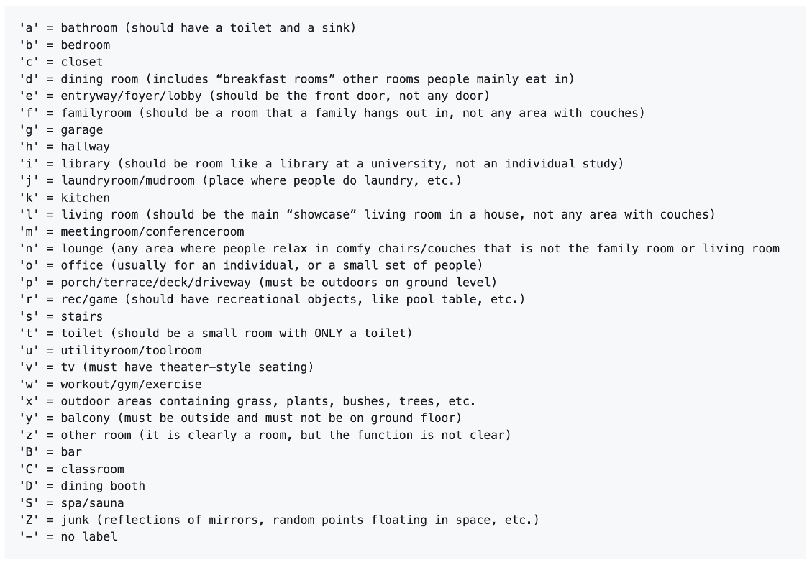
Conventions for each room category from MP3D dataset |
Multi-channel Swin Unet, positive prompts only
Multi-channel Swin Unet, positive w/ negative prompts (ours)
More demos compared between PONI and ours
Mesh reconstraction for illustration purpose
The floor map for the experiments shows the house (50.36㎡) layout. Five starting locations and target objects are marked on the map
|
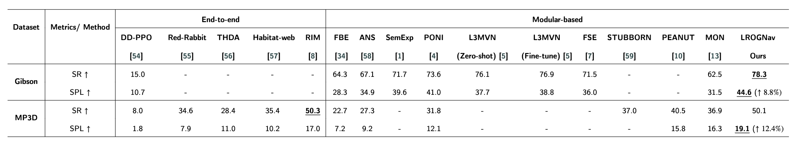
The improvements in SR and SPL compared with other SOTAs. |
Mesh reconstraction for illustration purpose
The floor map for the experiments shows the larger house (approx. 90㎡) layout. Different starting locations and target objects are marked on the map.
| 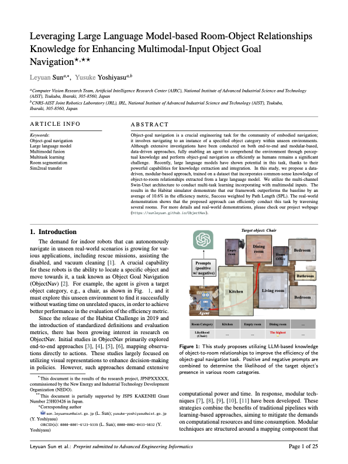 |
Leveraging Large Language Model-based Room-Object Relationships Knowledge for Enhancing Multimodal-Input Object Goal Navigation Submitted to Advanced Engineering Informatics 2024 Imapct Factor: 8.8 (hosted on ArXiv) |
If you find this study useful, please cite us:
@misc{sun2024leveraging,
title={Leveraging Large Language Model-based Room-Object Relationships Knowledge for
Enhancing Multimodal-Input Object Goal Navigation},
author={Leyuan Sun and Asako Kanezaki and Guillaume Caron and Yusuke Yoshiyasu},
year={2024},
eprint={2403.14163},
archivePrefix={arXiv},
primaryClass={cs.RO}
}
Acknowledgements |